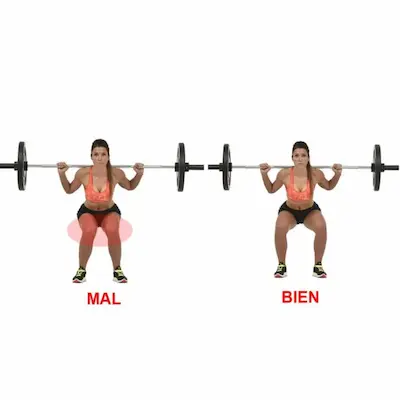

Los 5 Errores Más Comunes al Entrenar en Casa
Mala Postura y Técnica Incorrecta
Uno de los errores más frecuentes al entrenar en casa es descuidar la postura, lo que puede derivar en lesiones o resultados ineficaces. Por ejemplo, arquear la espalda durante las flexiones o no alinear las rodillas con los tobillos en las sentadillas son fallos que sobrecargan articulaciones y músculos. Es crucial aprender la técnica correcta de cada ejercicio, incluso si eso significa realizar menos repeticiones al principio.
La falta de supervisión profesional en el hogar agrava este problema, ya que no hay un entrenador que corrija los errores en tiempo real. Para solucionarlo, se recomienda grabarse o usar espejos para autoobservarse, o bien seguir tutoriales de fuentes confiables que detallen paso a paso la ejecución adecuada.
Rutinas Desequilibradas
Muchas personas caen en la trampa de trabajar solo los grupos musculares que más les interesan, como el abdomen o los brazos, olvidando otros como la espalda o las piernas. Esto genera desequilibrios musculares que pueden afectar la postura y aumentar el riesgo de lesiones. Una rutina bien diseñada debe incluir ejercicios para todo el cuerpo, asegurando un desarrollo armónico.
Además, es común omitir el calentamiento y el enfriamiento, pasos esenciales para preparar el cuerpo antes del ejercicio y ayudarlo a recuperarse después. Dedicar al menos 5 minutos a estiramientos dinámicos antes y estáticos después del entrenamiento mejora el rendimiento y reduce la rigidez muscular.
Intensidad Inadecuada
Algunos principiantes cometen el error de entrenar con demasiada intensidad desde el inicio, lo que puede llevar al agotamiento o a lesiones. Por otro lado, otros se quedan en su zona de confort sin desafiar su cuerpo, limitando su progreso. Encontrar un equilibrio es clave: la intensidad debe ser suficiente para provocar adaptaciones, pero manejable para mantener la constancia.
Una forma de medir la intensidad adecuada es el "test del habla": si no se puede hablar durante el ejercicio, es demasiado intenso; si se puede cantar, es demasiado leve. Ajustar la dificultad según este criterio asegura un entrenamiento efectivo y seguro.
Falta de Planificación y Objetivos Claros
Entrenar sin un plan específico suele derivar en falta de resultados y desmotivación. Es importante definir objetivos realistas, como mejorar la resistencia, ganar fuerza o perder peso, y diseñar una rutina acorde. Llevar un registro de los entrenamientos, anotando repeticiones, series y sensaciones, ayuda a trackear el progreso y ajustar el plan cuando sea necesario.También es útil establecer horarios fijos para el entrenamiento, tratándolo como una cita importante. Integrar el ejercicio a la rutina diaria, como hacerlo al despertar o antes de cenar, facilita la adherencia a largo plazo.